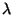
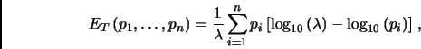
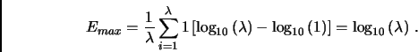

Claude Shannon, mathematician and computer scientist, born on April 30 1916, and died on February 24 2001, was the one who create the mathematical foundations which laid down the general rules of modern information theory. In his fundamental paper of 1948, A Mathematical Theory of Communication, a measure of the uncertainty associated with a random memoryless source, called entropy, is proposed. Here we are interested in the use of the entropy concept to analyze texts at the level of its words variety.
We define the entropy of a text T, with

words and n different ones, by the formula

where pi, i = 1,...,n, is
the frequency of each i-word in the text T, that is,
pi
is the number of times that the i-word happens to occur in the
given text. If we consider that a text of length (a text with
words) is as much richer as much larger is the number n of
different words and, among the texts with the same number of words and the same number n of
different words, is richer the one where the words have less
variation in frequency, one can easily conclude that the entropy
is indeed a very useful measure to compare the richness of two or
more texts. To compare texts with different number of words , we introduce a kind of ``relative
entropy'' Erel, defined as the quotient between the
entropy ET of the text and the
maximum entropy Emax,
and multiplying by 100 if one wants a percentage:
|
|---|
The maximum entropy Emax is just the entropy of a text with the same number of words and in which each word occurs exactly once (i.e., n : = , pi : = 1):

Given a text T, write a program that computes the total number of words in T, the entropy ET of the text, and its relative entropy Erel. In order to determine the required numbers, your program must be case insensitive (for example, words like ``House'', ``house'' or ``HOUSE'' must be considered to be the same). Also, in the context of this program, a word is a consecutive sequence of characters different of the punctuation marks , . : ; ! ? " ( ) as well as spaces, tabs and newlines ('\n'). Words with only one letter are to be considered.
The input contains several texts T, each one necessarily with more than one word ( > 1). You can assume that the maximum length of the words is 20 characters long and that a single text does not have more than 100 000 words.
A line containing only ****END_OF_TEXT*** marks the end of each text, and a line containing ****END_OF_INPUT**** marks the end of input. You can be certain that these reserved words wil not appear inside a text. Besides thats, everything can appear on a text, including blank lines.
In the output write one line for each test, each one containing three numbers: the first with the total number of words in T; the second with the text entropy ET rounded to one decimal digit; and the last one with the relative entropy Erel, in percentage, and rounded to be an integer.
Midnight, not a sound from the pavement Has the moon lost her memory? She is smiling alone In the lamplight, the withered leaves collect at my feet And the wind begins to moan ****END_OF_TEXT**** Memory, all alone in the moonlight I can dream of the old days Life was beautiful then I remember the time I knew what happiness was Let the memory live again ****END_OF_TEXT**** ****END_OF_INPUT****
33 1.4 93 31 1.3 89
1Barbra
Streisand, Memory (first two verses).